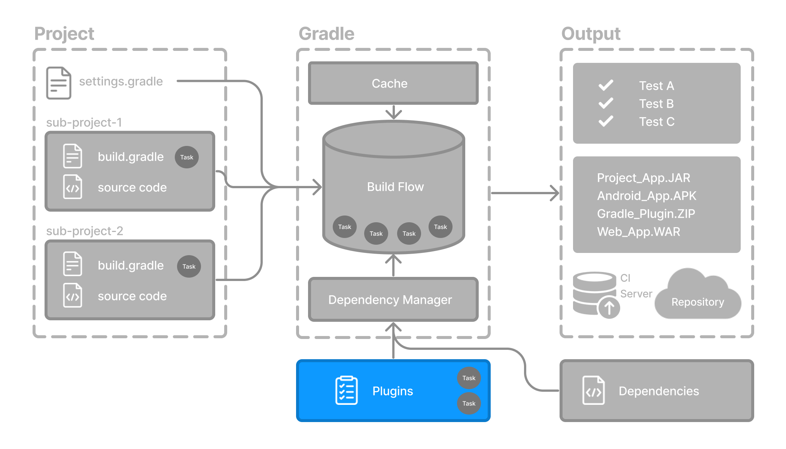

Gradle 建立在灵活的插件系统之上。
Gradle 自带依赖解析、任务编排和增量构建等核心基础能力。大多数功能，例如编译 Java、构建 Android 应用或发布产物，都来自插件。

插件是可复用的软件，用于为 Gradle 构建系统提供额外功能。它可以：
为构建添加新任务（例如
compileJava或test）添加新的依赖配置（例如
implementation或runtimeOnly）提供 DSL 元素（例如
application {}或publishing {}）
通过构建脚本中的 plugins 块（Kotlin DSL 或 Groovy DSL）可以应用插件。插件会引入特定领域或工作流程所需的全部逻辑。
常用插件
下面介绍一些常用插件及其作用：
- Java Library 插件（
java-library） 编译 Java 源代码、生成 Javadoc，并将类打包为 JAR。它会添加
compileJava、javadoc和jar等任务。- Google Services 插件（
com.google.gms.google-services） 在 Android 构建中配置 Firebase 和 Google API。它会添加
googleServices {}等 DSL，以及generateReleaseAssets等任务。- Gradle Bintray 插件（
com.jfrog.bintray） 通过
bintray {}配置块将产物发布到 Bintray（或其他 Maven 风格的仓库）。
应用插件
将插件应用到项目后，插件就可以扩展该项目的能力。
在构建脚本中，可以通过插件 ID（全局唯一的标识符或名称）和版本来应用插件：
plugins {
id("«plugin id»").version("«plugin version»")
}例如：
plugins {
id("java-library")
id("com.diffplug.spotless").version("6.25.0")
}这会告诉 Gradle：
应用内置的
java-library插件，它会添加用于编译 Java、运行测试和打包库的任务。应用社区维护的
spotless插件（版本为6.25.0）。它会添加代码格式化任务，并集成ktlint、prettier和google-java-format等工具。
插件的分发与获取
Gradle 插件有不同的来源，你可以根据使用场景选择合适的类型。
1. 核心插件
Gradle 核心插件是一组随 Gradle 发行版一同提供的插件。它们为构建和管理项目提供基本功能。
核心插件的独特之处在于它们提供了简短的名称，例如核心 JavaLibraryPlugin 的名称是 java-library。你可以直接通过 ID 应用它们，无需额外设置：
plugins {
id("java-library")
}这些插件由 Gradle 团队维护。完整列表请参阅核心插件参考文档。
2. 社区插件
社区插件由 Gradle 社区开发，并不属于 Gradle 核心发行版。它们提供额外的功能，这些功能可能专门面向某些使用场景或技术。
Gradle 的插件生态包含社区分享的数千个开源插件。这些插件通常发布在 Gradle Plugin Portal，可以通过 ID 和版本来应用：
plugins {
id("org.springframework.boot").version("3.1.5")
}构建运行时，Gradle 会自动下载插件。你可以前往 Gradle Plugin Portal 搜索插件。
3. 自定义插件和本地插件
你也可以编写自己的插件，供单个项目使用，或者在同一构建中的多个项目之间共享。
自定义插件通常使用 Java、Kotlin 或 Groovy 编写，结构与已发布的插件相同。
它们通常通过名称来应用：
plugins {
id("my.custom-conventions")
}下一步：了解 Build Scan >>